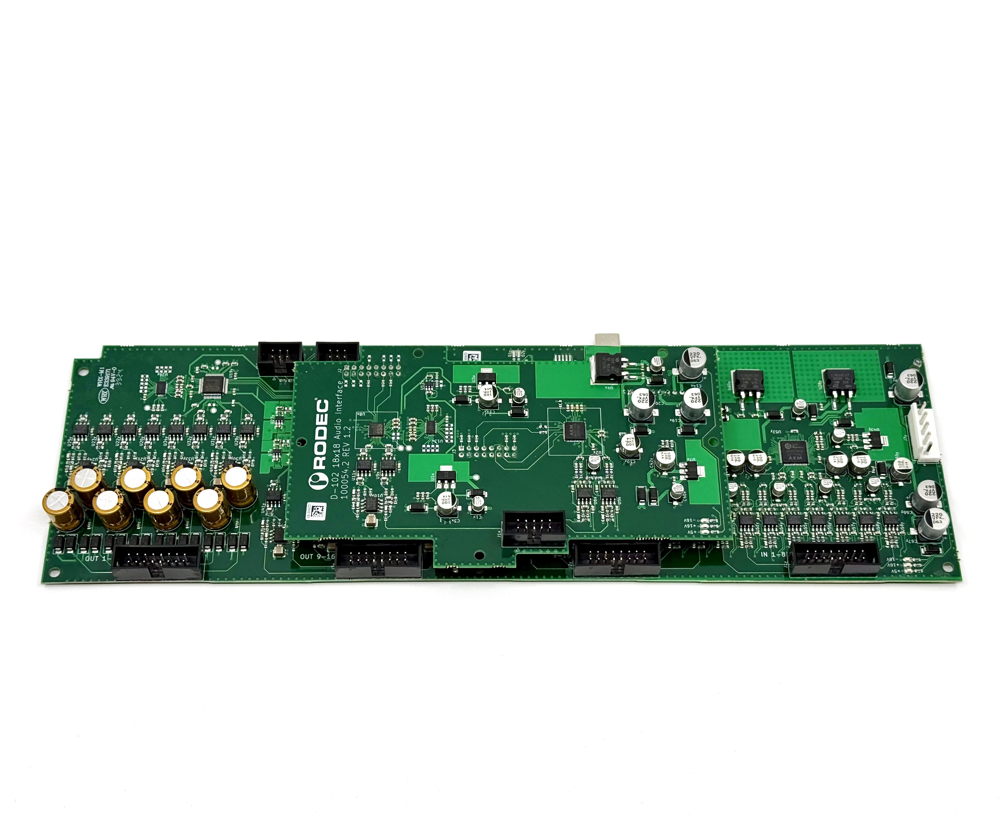

Digital Audio Interface

Digital Interface (Soundcard)
The MX Modular features a state-of-the-art digital interface designed for seamless integration with your computer and high-fidelity audio processing. Here's a detailed overview of its features and functionality:
Key Features
- 18 In / 18 Out: A high-performance class-compliant USB 2.0 interface with a USB-C connector at the back of the console, compatible with most modern operating systems.
- Premium Converters:
- ESS DACs (Digital-to-Analog Converters) deliver pristine playback quality.
- AKM ADCs (Analog-to-Digital Converters) ensure accurate and transparent recording.
- High Sample Rate Support: Operates at sample rates from 44.1 kHz to 192 kHz, catering to both standard and high-resolution audio workflows.
Channel Routing Overview
- Channels 1–2:
- From Computer to Console:
- 1-2 output are reserved for the stereo computer output and routed directly to the digital master keyboard button and volume knob on the control section.
- To Computer from Console:
- 1-2 input will record the stereo master from the console.
- From Computer to Console:
- Channels 3–10:
- From Computer to Console:
- Audio channels 3–10 from the computer are routed to the 1–8 analog inputs on the MX Modular.
- For each channel, you can select the audio source using a toggle switch:
- USB: Routes audio from the computer via the USB interface.
- Analog Input: Routes audio from the DB25 1-8 in connector on the back panel.
- To Computer from Console:
- Audio channels 3–10 to the computer are taken directly from the 500 series slot 1-8 outputs (after the insert point).
- A pre/post fader switch at the top of the console allows you to select whether the audio is sent:
- Pre-Fader: Directly after the 500 module, unaffected by fader adjustments.
- Post-Fader: Includes fader, x-fader and mute operations, useful for recording a performace in separate stems.
- From Computer to Console:
- Channels 11–18:
- From Computer to Console:
- Audio channels 11–18 from the computer are routed to the 9–16 analog inputs on the MX Modular.
- Ensure the 9–16 button is set to USB to route audio from the computer.
- To Computer:
- These channels route audio back into the computer from the corresponding 9-16 analog inputs or AUX/BUS sends or returns. See Input 9-16 and USB Master to choose what to send to the computer.
- From Computer to Console:
Operating Systems Compatibility
macOS
The Rodec digital interface is a class-compliant device, which works directly with macOS Core Audio. There is no need for a macOS driver. Simply connect the interface, select Rodec USB as your sound device in System Preferences, and you’re ready to go.
- Recommended macOS Versions:
- Rodec interfaces have been tested macOS 15.1 or higher.
- Versions below are untested. While operation may work, it is not guaranteed. Rodec recommends upgrading to the latest supported OS.
iOS and Android
- iOS:
- The Rodec USB interface is not officially supported with iOS. However, as a class-compliant device, it can work with compatible iPads.
- To connect to a Lightning-based iPad, you may need:
- A USB cable.
- Apple Lightning to USB Camera Adapter.
- For USB-C iPads, you may not need the camera adapter, depending on your setup.
- Connection Steps:
- Connect the Rodec USB interface hub to the Apple camera adapter (if applicable).
- Plug iPad power into the camera adapter.
- Connect the camera adapter to the iPad.
- Android:
- The Rodec interface is not tested or officially supported with Android devices.
Linux
The Rodec digital interface is not officially supported on Linux. However, many Linux distributions and audio drivers support class-compliant devices. While it may work, Rodec does not officially test or recommend any specific Linux OS.
Windows
- ARM-Based Windows Systems: These are not supported and may not work.
- ASIO Driver: The Rodec interface requires the ASIO4ALL ASIO driver (https://asio4all.org/) to be installed for Windows systems.
- You may have to tweak the ASIO settings depending on your hardware to get the best results
USB Interface Information
- The Rodec interface uses a USB-C connector on the back.
- USB Compatibility:
- The Rodec interface is USB 2.0 compatible
- Rodec recommends high quality USB cables up to 3 meters.
- USB to computer connections have many parameters that may cause grounding issues and noise, sometimes a good hub works better, sometimes direct connection to your computer works better. Test and see what works in your specific setup.